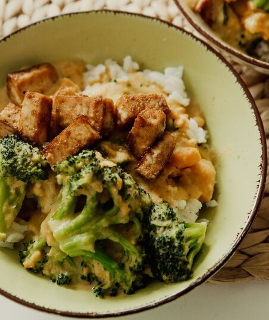

Chicken Broccoli and Rice

Chicken, broccoli, and rice? Yes, that's right. Every body builder's go-to meal.
This right here, is a meal that will never let you down. Satiating. Quick and easy Preparation.
Delicious. Oh, did I forget to mention it's also healthy? A one stop shop for all your macro needs.
Right here in one dish.
Ingredients
- Thawed Chicken Breast
- Uncooked Short Grain Rice
- Broccoli (Frozen or Fresh)
- Olive Oil
- Chicken Seasoning
- Hot Sauce (If Preferred)
Steps
- Preheat oven to 400 degrees.
- Cover chicken with a thin layer of olive oil.
- Apply chicken seasoning, covering the entirety of the breast.
- Place in oven on baking sheet for about 30 minutes or until fully cooked.
- Place rice in rice cooker untl done (usually takes 30 minutes).
- Steam broccoli
- Once chicken, broccoli and rice are all done, combine onto your favorite plate.
- Apply hot sauce if you deem it necessary.
Back to Homepage